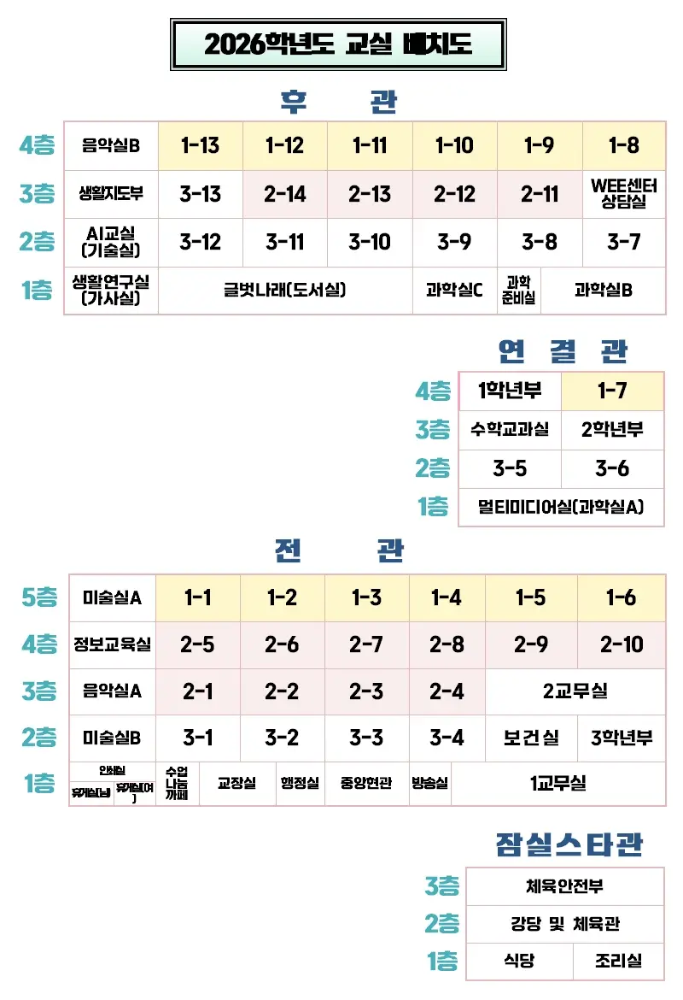
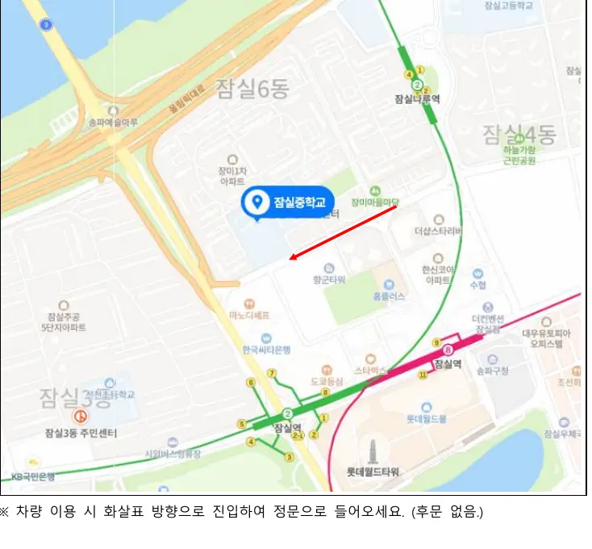

2026 잠실중학교 AI·디지털 선도학교
수업공개 참관 안내
국어 10. 14. (수) 2교시 09:45~10:30
기술 11. 10. (화) 1교시 08:50~09:35
참관 신청 구글 폼으로 신청 · 변경 · 취소 ›
국어 수업 기술 수업 일시·장소 학교 배치도 오시는 길 참관 안내 수업 자료 참관록 작성
주차 공간이 협소합니다. 가급적 대중교통(2·8호선 잠실역 도보 5분)을 이용해 주세요.
국어 · 3학년
「장소의 발견」
개념기반 탐구학습 단원의 전이하기 단계, 24차시
일시 2026. 10. 14. (수) 2교시 09:45~10:30
대상 3학년 8반
장소 3-8 교실 (후관 2층)
수업 교사 김○현 (국어)
논제 온라인 공간은 '장소'가 될 수 있다.
이 단원은
2학기 전체(약 29차시)를 하나의 개념 단원으로 묶어, 문학 작품을 통해 공간과 인간의 관계를 탐구하고 성찰합니다. 핵심 질문은 "장소는 어떻게 나를 만드는가? 장소를 잃는다는 것은 무엇을 잃는 것인가?"입니다.
학생들은 이-푸 투안의 '공간과 장소', 마르크 오제의 '비장소' 개념을 렌즈로 삼아, 신경림의 시(「가난한 사랑 노래」 「명매기 집」 「별의 노래」)와 장류진의 소설 「탐페레 공항」을 읽고, 비평문을 쓰고, 토론과 발표로 이어 갑니다. 지필평가 없이 수행평가 100%로, 학습지 포트폴리오와 고쳐쓰기가 평가 과정에 들어갑니다.
오늘 수업에서 AI의 자리
단원 전체에서 학생이 AI를 직접 쓰는 장면은 이 한 차시뿐입니다. AI는 답을 주는 자리가 아니라 상대 팀의 자리에서 우리 근거를 반박하는 상대입니다. 학생은 1차시부터 스스로 세워 온 '장소의 조건'(관계성·정체성·역사성)을 기준으로 AI의 반론을 판단하고, 재반박을 쓰고, 자기 근거를 고칩니다.
사람이 먼저 — AI 반론을 받기 전에 팀이 먼저 상대의 반박 지점을 예상합니다.판단은 학생이 — 받은 반론을 '재반박 가능 / 조건을 붙이면 됨 / 우리 약점'으로 분류하고 이유를 말합니다.사실 확인은 사람이 — AI 반론 속 확인되지 않은 사실을 학생이 잡아냅니다.채점 대상은 종이 — 웹앱 기록은 과정 증거이고, 각자 손으로 옮겨 적은 개요서가 평가 대상입니다.
45분 흐름
5' 도입근거·사례 확인, 개요서 만점 조건과 AI 사용 규칙 세 가지
7' [팀] 사람이 먼저근거 2개와 사례를 웹앱에 옮겨 적고, 상대가 어느 지점을 반박할지 팀이 직접 예상
13' [팀] AI 반론근거마다 AI 반론 하나를 받아 분류하고, 가장 뼈아픈 반론에 재반박
10' [개별 → 팀] 전/후반론 전 근거와 뒤의 논박 방향을 나란히 보고 '어떻게 달라졌는지' 이름 붙이기, 개요서에 옮겨 적기
7' 공유모둠 재반박 문장을 TV에 띄우고 "이 재반박들이 공통으로 기대는 조건은?"
3' 정리"좋은 반론은 상대 근거의 ( )을/를 묻는다" · 다음 시간 두 마음 토론 예고
참관하실 때 함께 봐 주셨으면 하는 지점
근거가 어떻게 달라지는가 — 사례만 더 붙였는지, 범위를 좁혔는지, 장소의 조건으로 다시 짰는지
반론을 무엇으로 판단하는가 — 감인지, 개념어인지, 자료의 타당성인지 (모둠 대화에서 들립니다)
AI의 말을 받아들일 때 이유를 말하는가
공유에서 반 전체의 판단이 한 문장으로 모이는가
참관 교사용 화면
수업용 웹앱 '반론 스파링'에는 참관 교사용 화면이 따로 있습니다. 휴대폰으로 접속하면 수업 의도, 45분 흐름, 관찰 지점과 함께 모둠이 지금 적고 있는 문장이 읽기 전용으로 갱신되어 보입니다. 접속 주소와 참관 코드는 수업 시작 때 교실에서 구두로 안내드립니다.
수업 자료 보기 (참관 코드 필요)
기술 · 친환경 에너지
「에너지 아일랜드」
웹 게임 기반 시뮬레이션 수업, 총 3차시 중 1차시 공개
일시 2026. 11. 10. (화) 1교시 08:50~09:35
공개 차시 1차시 / 총 3차시 — 섬 설계
대상 3학년 7반
장소 3-7 교실 (후관 2층)
수업 교사 정○영 (기술)
수업 개요
본 수업은 웹 게임 「에너지 아일랜드」를 활용하여, 학생이 가상의 섬 하나를 3차시 동안 직접 설계·운영하며 친환경 에너지 자원의 특성을 배우는 과정을 담고 있습니다.
단순히 발전 방식을 외우는 데서 그치지 않고, 인구 증가와 날씨 변화로 생기는 에너지 문제를 해결하고 주민·환경에 미치는 기술의 영향을 평가합니다. 마지막에는 그 근거를 바탕으로 내 섬을 홍보하는 발표로 마무리합니다.
AI·디지털 통합 포인트
디지털 시뮬레이션 설계
지형과 입지를 고려해 발전 설비를 배치하고, 그 결과를 실시간 수치로 확인하며 설계를 고쳐 나갑니다.
데이터 기반 의사결정
발전량 그래프, 수요와 공급, 주민 만족도, 생태 건강도 데이터를 근거로 문제를 고르고 해결 전략을 세웁니다.
디지털 포트폴리오
차시별 기록지와 활동지를 디지털로 누적하여 자기 성찰에 활용합니다.
3차시 흐름과 공개 차시
섬 설계 공개 차시 지형·입지를 읽고 발전 설비를 배치하며 에너지원별 특성을 익힙니다. 11월 10일 1교시에 공개하는 수업입니다.
문제 해결과 운영 인구 증가, 날씨 변화로 생기는 수급 문제를 데이터로 진단하고 전략을 세웁니다.
평가와 홍보 발표 주민과 환경에 미친 영향을 평가하고, 근거를 들어 내 섬을 홍보합니다.
공개하는 1차시는 단원의 첫 시간이라 학생들이 처음 섬을 받아 설계를 시작하는 장면을 보시게 됩니다. 1차시 세부 지도안과 활동지는 '수업 자료'에서 확정되는 대로 안내합니다.
참관하실 때 함께 봐 주셨으면 하는 지점
학생이 지형과 입지를 읽고 발전 설비를 배치하는 근거를 말하는가
실시간 수치(발전량·수요와 공급)를 보고 설계를 고쳐 나가는가
에너지원별 특성을 외우는 데서 그치지 않고 섬의 조건과 연결해 판단하는가
차시 기록지가 결과 보고가 아니라 사고의 흔적으로 쌓이는가
수업 자료 보기 (참관 코드 필요)
수업공개 일시·장소
두 수업은 날짜가 다릅니다. 참관을 원하는 수업을 골라 신청해 주세요.
국어
2026년 10월 14일 (수) 2교시
시간 09:45 ~ 10:30 (45분)
장소 3-8 교실 · 후관 2층
수업 교사 김○현
수업 「장소의 발견」 두 마음 토론 준비하기 (24차시)
기술
2026년 11월 10일 (화) 1교시
시간 08:50 ~ 09:35 (45분)
장소 3-7 교실 · 후관 2층
수업 교사 정○영
수업 「에너지 아일랜드」 친환경 에너지 섬 설계·운영 (1/3차시)
당일 일과표
구분 시간 비고 1교시 08:50 ~ 09:35 기술(11/10) 2교시 09:45 ~ 10:30 국어(10/14) 참관록 제출 참관 후 구글 폼 (추후 안내)
참관 신청
참관 신청
아래 내용을 확인한 뒤 신청 버튼을 눌러 주세요. 신청서는 구글 폼으로 열립니다.
신청서에 적는 내용
성명 참관 교사 이름
소속 학교 학교명 (예: ○○중학교)
연락처 휴대전화 번호 — 신청 확인과 당일 안내에만 사용합니다.
신청 구분 신규 신청 · 신청 내용 변경 · 신청 취소
참관 수업 국어 10/14(수) 2교시 · 기술 11/10(화) 1교시 (복수 선택 가능)
개인정보 수집·이용 동의
수집 항목 성명, 소속 학교, 연락처
수집 목적 수업공개 참관 신청 접수 및 확인, 신청 변경·취소 처리, 당일 안내
보유 기간 수업공개 종료 후 결과 보고가 끝나는 2026년 12월 31일까지 보유하고 지체 없이 파기합니다.
동의 거부 동의를 거부할 수 있으나, 거부 시 참관 신청 접수가 어렵습니다.
근거: 「개인정보 보호법」 제15조. 수집된 정보는 잠실중학교 교육연구부가 관리하며 위 목적 외에 사용하지 않습니다.
신청하기
신청 변경·취소 같은 신청서를 한 번 더 보내 주세요. 첫 문항 '신청 구분'에서 신청 내용 변경 또는 신청 취소 를 고르고 성명과 학교를 적으면 됩니다. 같은 분이 나중에 보낸 내용을 기준으로 처리합니다.
참관록 제출
참관 후 참관록을 구글 폼으로 제출해 주세요. 양식은 수업 전에 이곳에 연결됩니다.
학교 배치도
정문으로 들어오면 전관 중앙현관입니다. 두 수업 모두 후관 2층 교실에서 진행하니 교실로 바로 오시면 됩니다.
국어 수업 — 후관 2층 3-8 교실기술 수업 — 후관 2층 3-7 교실전관에서 후관으로는 연결관을 통해 이동합니다.

2026학년도 교실 배치도. 그림을 길게 눌러 저장할 수 있습니다.
잠실중학교 오시는 길
서울특별시 송파구 올림픽로35길 130 주소 복사
교내 주차 공간이 협소하여 참관 교사 주차가 어렵습니다. 가급적 대중교통을 이용해 주세요. 부득이 차량으로 오실 경우 정문으로 진입해 주세요(후문 없음).
지하철
2호선 잠실역 7번 출구에서 도보 5분8호선 잠실역(송파구청) 9번 출구에서 도보 5분
버스
16, 342, 3318, 3412, 4318 — '잠실중학교·장미종합상가' 정류장 하차 후 도보 2분

약도. 차량 이용 시 화살표 방향으로 진입해 정문으로 들어오세요.
참관 안내
수업 당일의 흐름과 참관 시 부탁드리는 점입니다. 별도의 사전 모임과 사후 협의회는 없습니다.
당일 흐름
입실 — 정문으로 들어와 중앙현관을 지나 연결관을 거쳐 후관 2층 교실로 바로 오시면 됩니다. 수업 시작 5분 전 입실을 부탁드립니다.
참관 — 교실 뒤쪽과 모둠 옆에서 참관합니다. 모둠 대화를 가까이에서 들으셔도 좋습니다.
참관록 제출 — 참관 후 참관록을 구글 폼으로 제출해 주세요. 제출 링크는 당일 교실과 이 페이지의 '참관록 제출' 버튼으로 안내합니다.
참관 시 부탁드립니다
휴대전화는 무음으로 해 주시고, 학생 얼굴이 나오는 촬영은 삼가 주세요.
학생이 질문해 오면 짧게 답하셔도 괜찮습니다. 다만 활동의 정답을 알려 주지는 말아 주세요.
국어 수업에서는 참관 교사용 화면(휴대폰)으로 모둠의 기록을 함께 보실 수 있습니다.
크롬북·TV 등 기기 배선이 있으니 이동 시 발밑을 살펴 주세요.
수업 자료
지도안과 수업 소개 문서, 수업용 웹앱은 수업 시작 때 교실에서 안내하는 참관 코드를 '수업 자료'에 입력하면 열립니다. 참관 중 휴대폰으로 보실 수 있습니다.
수업 자료
참관 교사용 자료입니다. 수업 시작 때 교실에서 안내하는 참관 코드(숫자 4자리)를 입력하면 열립니다.
참관 후
참관록 작성
수업을 참관하신 뒤 참관록을 구글 폼으로 작성해 주세요. 수업자의 성찰과 다음 수업 설계에 소중한 자료가 됩니다.
작성 안내
참관한 수업(국어 10/14 · 기술 11/10)을 선택하고, 수업 중 관찰한 학생의 배움을 중심으로 적어 주세요.
국어 수업은 '참관하실 때 함께 봐 주셨으면 하는 지점' 네 가지, 기술 수업은 섬 설계 장면에서의 판단 근거를 참고하시면 좋습니다.
작성 시간은 5분 정도면 충분합니다. 당일 참관 직후 작성을 부탁드립니다.
참관록 작성하기
양식은 수업 전에 이곳에 연결됩니다. 수업 당일 교실에서도 QR로 안내합니다.